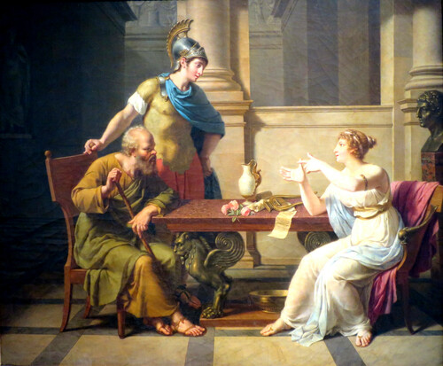

Who is the Father (or Mother) of Philosophy?
If you like reading about philosophy, here's a free, weekly newsletter with articles just like this one: Send it to me!
Who is the father of philosophy?
It is impossible to identify one person who is supposed to be the “father” or “mother” of philosophy. Skills like philosophy, writing or art developed independently many times over the course of human history. And one could argue that even a child that asks, for example, “why is it wrong to steal something?” is actually doing philosophy by asking one of the timeless philosophical questions.
If we ask instead which philosophers have had the greatest influence in the histories of their cultures, we could perhaps give a few names:
- In ancient Greece, Thales of Miletus (~624–548 BC) is often cited as the first philosopher. Thales asked questions like “what are all things made of deep down?” (he thought it’s water), and he was also interested in astronomy. Thales might have been one of the first philosophers we know of, but his ideas are not very influential today. The crown for the most influential Western philosophers surely goes to three men that were teachers and students of each other: Socrates, Plato and Aristotle.
- Socrates (470–399 BC) was famous for his questioning method and became known for his relentless pursuit of the truth, which, in the end, cost him his life.
- His student Plato (428-348 BC) wrote so many works on so many different, fundamental questions in philosophy, that there is a saying that the history of Western philosophy is just “footnotes to Plato.”
- Plato’s student Aristotle (384–322 BC) worked on both philosophy and the natural sciences of his time. He wrote on physics, biology, logic and many other topics. In a way, he could be considered the father of Western science along with being one of the most influential philosophers ever. Both Plato and Aristotle had huge influence over the later philosophy of the Catholic church, and particularly Aristotle was widely read by Arab philosophers of the Middle Ages.

- Finally, René Descartes (1596-1650) is widely seen as one of the fathers of modern philosophy.
- In the Eastern tradition, certainly Confucius (551-479 BC) and Lao Zi can be considered “fathers” of their respective philosophical traditions. Confucianism, with its heavy emphasis on ethics, traditions and rules of behaviour has shaped Chinese society throughout its whole history and up to the present day.
- Lao Zi’s (571-? BC) Daoism emphasises the ideal of a human life lived in harmony with the underlying order of the universe and following “The Way” of natural processes. While Confucianism is a very social philosophy that emphasises traditions and institutions, Daoism (or Taoism) encourages distancing oneself from society in order to be able to reach back to the original meaning of the universe and of one’s human life.

Daily Philosophy’s recommendations for five more of the most inspiring books for your Christmas presents list. The best from Jill Taylor, John Stevens, Bill Porter, Eugen Herrigel and Aldous Huxley. With tips on whom to gift each book.
Who is the mother of philosophy?
Unfortunately, the situation is pretty grim concerning possible mothers of philosophy. A Google search gives no useful results, except a supposedly funny quote attributed to Hobbes that “leisure is the mother of philosophy.”
There are quite a number of very prominent and important women philosophers, but only very few from the beginnings of our civilisations. Most women philosophers we now know and admire have lived within the last 300 years or so, and of those, most again in the past 100. With the notable exception of Epicurus, who invited women to learn as students in his “Garden,” the great ancient cultures did little to give women opportunities for education and careers in the sciences, and so philosophy has sadly been the domain of men for most of human history.

Socrates visiting Aspasia, painting by Nicolas André Monsiaux, 1801.
Anyway, let’s see some of the names that come to mind when we talk about famous women of the past that could be said to have been affiliated with and influential for philosophy.
- Diotima of Mantinea must certainly be named in the first place, because Socrates himself mentions her as his teacher in Plato’s Symposium. We don’t know whether Diotima actually lived and whether she was a priestess (one of the few high-status positions available to women) or not; but just the fact that Plato elevates her to the position of a teacher to the otherwise near-perfect uber-philosopher Socrates is remarkable.
-
Aspasia of Miletus (~470-400 BC) is another figure that might be said to have been at least an aunt of ancient Greek philosophy, if not its mother. Aspasia was the companion of the statesman Pericles, who steered Athens through the height of its Golden Age. She was a patron of the arts and hostess to intellectual gatherings that attracted the best and most prominent philosophers, artists and poets to her house. One theory about Diotima (above) is that she might be a fictional version of Aspasia. There existed many other ancient sources on Aspasia, but most are lost today, preserved only in the writings of others. Cicero, the Roman statesman and writer, portrays Aspasia as a female equivalent of Socrates. Unfortunately, due to her engagement with Pericles and the fact that she was not an Athenian citizen, she got her share of hatred from many contemporaries, who were quick to portray her as an immoral woman who tempted Pericles into a life of sexual indulgence and immorality, foreshadowing the much later association of “witches” and female sexuality with the devil.
-
Hypatia of Alexandria (~350-415 AD) surely also belongs into this list. Too young historically to be a “mother” to philosophy, she was a bright star among the Neoplatonist philosophers of Alexandria. She was also a mathematician and astronomer, beloved by both pagans and Christians, and teacher to many who would later become known philosophers themselves.
-
Ban Zhao (~49-120 AD) was a Chinese philosopher and first female historian we know of. She completed her brother’s work on the history of the Han, wrote a book about women’s conduct and, in an unfortunate echo of the typecasting of her Western sisters, is said to have been an instructor on Taoist sexual practices for the imperial family.
Live Happier with Aristotle: Inspiration and Workbook.
In the book to this series of articles you're reading right now, philosophy professor, founder and editor of the Daily Philosophy web magazine, Dr Andreas Matthias takes us all the way back to the ancient Greek philosopher Aristotle in the search for wisdom and guidance on how we can live better, happier and more satisfying lives today.
Get it now on Amazon! Click here!

It is interesting (and tragic) to see how almost all famous women from ancient times have the stigma of their sexuality attached to them, regardless of their other qualities and roles in life. Eve causes the fall of Adam through her uncontrolled desire. Diotima, although nothing bad is said about her, is still only perceived as Socrates’ teacher in matters of… love (because what else would a woman have to talk about?). Aspasia is often portrayed as a prostitute and her rich contributions to Athenian cultural life take almost second place to the immorality of her relationship to Pericles. Sappho, the ancient Greek poet from the island of Lesbos, is today almost exclusively perceived through her association with lesbianism, rather than as a great poet. And the sad story goes on in this way up to Mary Magdalene and beyond. Originally the brightest and most beloved of Jesus’ disciples, Mary Magdalene was cast by Pope Gregory I in 591 as a prostitute, in an attempt to restore the purity of the male-only club of the apostles. Sigh.
If you are interested in learning more about philosophy, don’t hesitate to look around this site! You can also find excellent, understandable introductions to philosophy as books. A review of the best introductions to philosophy is here:

We discuss the three best introductory books to philosophy.
Cover image: Socrates visiting Aspasia, painting by Nicolas André Monsiaux, 1801.